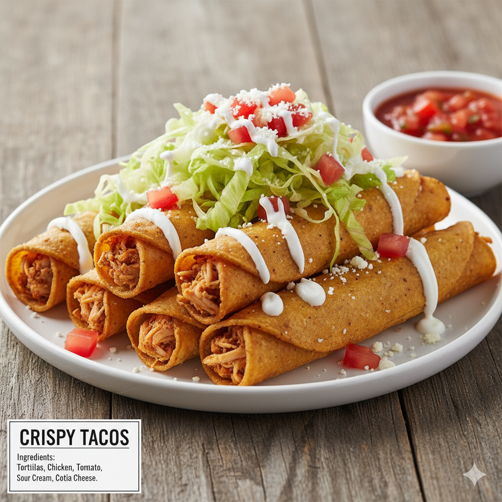

Tacos Dorados (Crispy Tacos)
Home

Description
If you're searching for crunchy perfection, these are your tacos. Tacos Dorados offer the textural contrast every food lover craves: a golden, firm corn tortilla that breaks with a satisfying crunch when you bite into it. Filled with perfectly seasoned shredded beef or chicken, they provide the ideal foundation for your favorite toppings. Load them up with fresh lettuce, crumbled cheese, sour cream, and your best salsa for an explosion of flavor that is classic, fun, and delightfully addictive. It's Mexican street food at its finest!
Ingredients
- 1 lb ground beef, cooked and seasoned (or shredded chicken)
- 12 corn tortillas
- Oil for frying
- For the toppings (suggestions):
- Shredded lettuce
- Diced tomatoes
- Sour cream
- Crumble cheese (cotija or queso fresco)
- Salsa
Instructions
- Place a small amount of cooked, seasoned meat in the center of a tortilla.
- Roll the tortilla tightly into a cylinder.
- Heat about 1 inch of oil in a skillet. Carefully place the rolled tacos in the hot oil.
- Fry for 2-3 minutes per side, or until golden and crispy.
- Remove from oil and drain on a paper towel.
- Serve immediately with your favorite toppings.